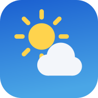

Keine Verbindung
Die Wetter-App braucht für Vorhersagen eine Internetverbindung. Prüfe WLAN oder mobile Daten und versuche es dann erneut.
Erneut versuchen
Die Wetter-App braucht für Vorhersagen eine Internetverbindung. Prüfe WLAN oder mobile Daten und versuche es dann erneut.
Erneut versuchen